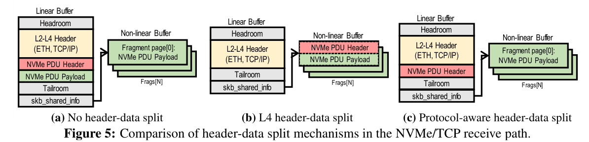
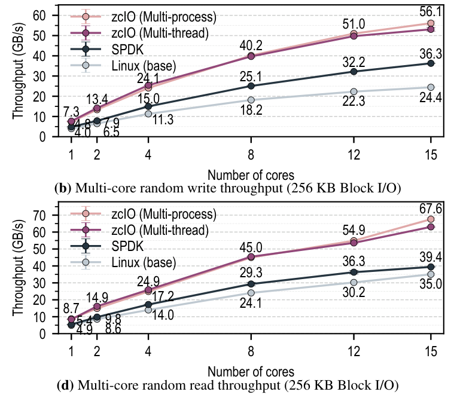
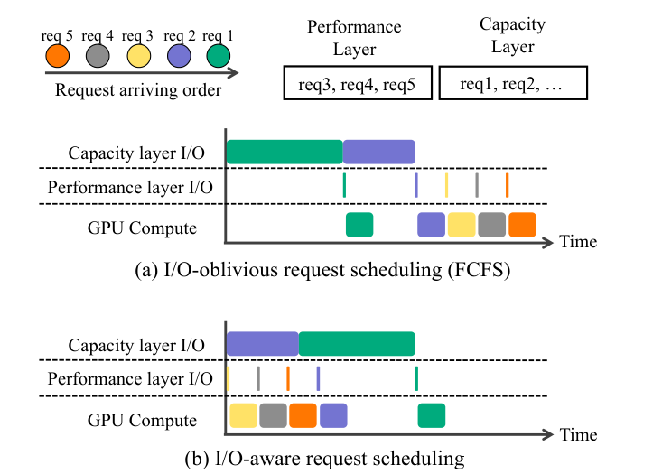

结论先行：值得研究的是“何时搬、搬多少、何时算可用”
判断：NVMe-oF 已经可以作为共享 KV Cache 容量层，但把远端 SSD 接上推理框架本身已不足以构成新研究。 更有价值的空间位于推理调度、共享存储队列与缓存正确性之间：让一次缓存命中真正转化为更好的 TTFT/TPOT，而不是只提高命中率或总带宽。
| 问题 | 当前证据指向 | 建议优先级 |
|---|---|---|
| 共享池被多实例同时恢复压垮，平均带宽好但尾延迟差 | NVMe-oF 流控、KV 预取与恢复/重算已有各自研究，但跨引擎的 GPU 截止期和设备预算仍需联合验证 | P0：端到端观测与 SLO 联合准入 |
| 推理成功不代表 KV 落盘成功，完成通知不代表 GPU 可用 | 现有 NoF 连接器有配置传递断点；NVMe、网络、元数据和 CUDA 完成属于不同状态 | P0：内容正确性与可用性契约 |
| 小块碎片、公共前缀、会话分叉与跨目标慢节点冲突 | 本地粒度整合和扁平层级已有最新先行工作，不能重复包装 | P1：跨节点前缀布局和最慢 rank 控制 |
| SSD 读写与网络搬运比重算更贵 | 命中率不是效益指标；上下文长度、GQA/MLA、GPU速度和共享带宽改变交叉点 | 先建立可复现实验，再决定是否值得做 |
推荐路线：先用固定版本的推理引擎、连接器和 NVMe-oF 目标复现真实 KV 写入与恢复，再做不改变块协议的控制面。 不建议一开始设计新 NVMe 命令或重写整个存储系统。正式研究、预印本、工程文档在下文分别标明；创新部分是待验证假设，不是已证明的新颖性或性能承诺。
先厘清边界：四种“远端缓存”不是同一条路径
| 路径 | 实际存储介质与协议 | 给 KV Cache 的能力 | 不能自动得到的能力 |
|---|---|---|---|
| RDMA 远端 DRAM KV 池 | RNIC 访问注册内存，应用维护对象目录 | 高带宽、较低访问延迟、节点间共享 | SSD 容量、落盘持久性、标准块语义 |
| 本地 NVMe offload | 推理机自己的 SSD，经文件/块 I/O | 扩容简单、故障域局部化 | 跨推理节点共享、容量弹性与远端副本 |
| NVMe-oF 共享 SSD 池 | 标准 NVMe 命令经 TCP 或 RDMA 等传输到 target namespace | 远端块访问、成熟 initiator/target 生态、容量池化 | 内容寻址、前缀树、模型版本校验、租户授权、张量布局 |
| GDS / GPU 发起 I/O | GPU 与存储间的数据路径或发起方式 | 减少 CPU bounce buffer 或控制面干预的可能 | 不保证底层是 NVMe-oF，也不保证所有拓扑和驱动都真正零拷贝 |
NVMe-oF 是块设备访问层；KV Cache 是有模型、token 位置、layer、head/rank 与数据格式含义的对象层。中间必须有可验证的映射，而不是把“GPU 缓存块号”直接视为远端 LBA。对内存缓存而言可接受的回收时机，搬到异步 SSD 和 RDMA DMA 后可能变成 use-after-free；对本地盘成立的顺序性，也不能未经验证就扩大到多 target。
一次前缀恢复的完整关键路径
- 识别能复用什么。 对租户授权域、模型权重/adapter、token 前缀、RoPE 与 KV dtype/layout 生成兼容身份，查询已发布对象的 manifest。最长前缀匹配与块寻址在 NVMe-oF 之上完成。
- 决定读还是重算。 根据当前 GPU 的 prefill 速度、可重用长度、有效网络/盘带宽与排队估计做决策。缓存 hit 可以被主动放弃；仅用空载带宽做阈值会在突发并发下失效。
- 安排实际 I/O。 将逻辑 KV 分片映射为 extent，分配有界注册/中转缓冲，按目标 namespace 和队列提交读取。可合并的是物理请求，不是任意改变模型可见的 token/layer 顺序。
- 让数据到达可消费的位置。 目标设备完成、initiator 收到数据、H2D/GDS 完成、张量解码和 GPU stream 可见依次有各自条件。若按层流水化，必须按实际依赖建立 ready event，不能把整次 I/O 的某个完成事件当作所有 layer 就绪。
- 消费、取消与回收。 GPU 消费完成后才能复用缓冲；取消请求不表示未决 DMA 已停止。失败退回 miss/重算应可控，避免大量目标失败让 GPU 集群同时陷入重算风暴。
以上是本报告的系统化分析框架，具体实现需依据连接器和 GPU 数据路径验证；它不是某篇论文声称的现成统一架构。
容量与恢复下界：选题前先算清账
对标准MHA/GQA、未压缩且保留全部历史的KV，逻辑字节/token为 s = 2 × L × H_kv × d_head × b，其中2表示K与V，L为层数，H_kv为KV头数而非query头数，b为每元素字节。单请求N个tokens需D=N×s；该式不含对齐、元数据、allocator碎片、复制、暂存窗口和量化scale。MLA、滑动窗口、稀疏缓存须按实际实现重算，不能套同一公式。
以NVIDIA公开的Llama-3.1-Nemotron-70B-Instruct-HF配置为可核查示例：80层、8个KV头、head_dim=128。假设KV采用BF16（2字节），这是本报告推导而非实测：s=327,680 bytes=320 KiB/token；131,072 tokens需40 GiB。8路TP且KV头均匀无重复分片时，每rank约5 GiB，但全请求逻辑总量仍是40 GiB；TP超过KV头数或采用复制实现时，不应直接除以TP。权重量化为FP8也不自动代表KV是FP8。
40 GiB约42.95 GB。在全请求共用一条100 Gb/s链路、无压缩且全部数据必须通过该链路时，单纯传输的理想下界约3.44秒；400 Gb/s约0.86秒。两者尚未计协议、SSD、PCIe、排队与GPU注入，因此不能称为实际恢复延迟。多rank多链路可提高聚合带宽，但前提是存储端、PCIe和RNIC并行路径匹配，不能将每GPU链路速率重复算作共享目标的可用速率。
若同负载下prefill速度为R tokens/s，忽略固定开销的恢复获益必要条件为B_effective > s×R；加入固定开销T0后，还必须满足T0 + N×s/B_effective < N/R。这个近似条件只用于完整前缀恢复与完整重算的粗筛，R会随N、batch、GPU、attention方式改变；分层流水线、部分重算和上下文并行需要实测关键路径。对于上例，若假设R=20,000 tokens/s，则门槛约6.55 GB/s；R翻倍后约13.11 GB/s，已经超过单100Gb/s理论原始字节带宽。这里R是演示参数，不能用于采购承诺。
真正的机会不是把容量做大，而是找到“哪些prefix在当前负载下值得存、值得读，哪些应重算”；对每个候选方案同时记录s、N、R、实际有效B、固定开销与共享队列，而不是只报SSD顺序读峰值。
示例配置来源（NVIDIA发布模型配置，非Meta原始权重下载）：https://huggingface.co/nvidia/Llama-3.1-Nemotron-70B-Instruct-HF/blob/main/config.json
NVMe-oF 最新研究进展
标准进展：当前基线已经不是 NVMe-oF 1.1
NVM Express 官方页面核实：2026-08-04 发布 NVMe 2.4 规范集（批准日期2026-07-31），其中 Base 2.4、NVMe/RDMA Transport 1.3、NVMe/TCP Transport 1.3；旧独立 NVMe-oF Specification 页面被标为 historical reference。规范拆分使基础协议、命令集、transport 独立演进。本轮核实版本与发布日期，没有逐条审计1.3相对1.2的变更，因此不把版本号更新当成某项KV功能已经可用。
工程含义：设计和测试要固定 Linux/SPDK版本、RNIC/SSD固件与实际协商能力，不能用最新标准文档推断部署栈已支持全部功能。模型缓存的共享、租户隔离及失败恢复仍应在上层设计。
zcIO：TCP零拷贝的难点是“收到的数据能否直接成为最终页面”
身份：zcIO: Enabling Transparent Zero-copy for NVMe/TCP。Junghan Yoon、SeungYeon Shin、Jonghyeon Park、KyoungSoo Park（首尔大学），Jaehyun Hwang（成均馆大学）。已在 FAST 2027 官方 Spring Accepted 列表确认录用，会议尚未举行；使用官方预出版版本，不写成2027论文已经正式发表。列表在2026年已公开，精确首次上线日未核实。
关键机制与正确性
普通 TCP 给字节流，NVMe/TCP 给 PDU，虚拟内存按4KB页管理。网络报头、24B数据PDU头和块数据落在同一页或跨页时，即使 NIC 能 DMA，也仍要复制到最终请求buffer。只开jumbo frame或TCP_NODELAY不能保证每个PDU/page边界与segment一致。
zcIO 做三层联合约束：发送端按PDU/页边界截断分段，必要时从下一skb借用数据引用补齐；将NVMe数据PDU头放入TCP option区域，让支持header-data split的NIC把它和L2–L4头分开；接收端把stride设为4KB，避免多个小包污染同一物理页。目标端写路径把完整收到的RX页交给块层，引用计数保持至SSD DMA完成；发起端direct-read通过页表重映射把RX页交给应用，先合并TLB失效再宣布I/O完成。队列变空时立即flush，避免等批次拖慢稀疏请求。后续完全覆写或munmap等事件回收页，部分覆盖退回copy。


普通 L4 header-data split 仍把 NVMe PDU 头留在 payload 页；zcIO 进一步分离记录头并对齐4KB页面，才能让RX页成为最终I/O页。这幅图解释了协议布局与虚拟内存共同制约零拷贝，而不是证明任何GPU路径已经零拷贝。
Junghan Yoon、SeungYeon Shin、Jonghyeon Park、Jaehyun Hwang、KyoungSoo Park · FAST 2027 官方预出版版本 · PDF 第7页 · 必要技术评论节选
原图上下文 ↗数据与边界
§7：Linux6.11、2×400GbE ConnectX-7、MTU9000，target Xeon6418H/24核、initiator5512U/28核，8块Samsung9100PRO。对照Linux6.11和SPDK25.09 TCP。256KB随机读、15核达到67.6GB/s，随机写56.1GB/s；单核512KB读10.2GB/s。4KB并非普遍获益，SPDK在4KB随机读领先；额外发送分段在4KB有约14%代价，大块约3%。CPU数、I/O尺寸与读写方向不能省略。


横轴是接收处理核数，随机写比较target侧，随机读比较initiator侧。15核时多进程zcIO分别达到56.1/67.6GB/s，读端Linux为35.0、SPDK为39.4GB/s；8核zcIO读45.0GB/s已超过两基线15核结果，支持降低CPU需求的结论。多线程与多进程不能混算；双400GbE、8块NVMe、MTU9000条件不能直接套到100GbE的KV部署。这不是4KB、尾延迟或NVMe/RDMA比较。
Junghan Yoon、SeungYeon Shin、Jonghyeon Park、Jaehyun Hwang、KyoungSoo Park · FAST 2027 官方预出版版本 · PDF 第10页 · 必要技术评论节选
原图上下文 ↗当前实现重点是direct I/O；buffered-read页缓存整合留作后续。要求两端内核/驱动协同修改及header-data split，原型支持CX7；SACK/TCP option空间冲突、未对齐尾部等回退复制。软件kTLS没有收益；硬件TLS仍有尾tag破坏页面布局的问题，文中讨论需额外支持。§8仍观测NVMe/RDMA优于zcIO，故不能说它已经“替代RDMA”。
对KV的分析推断：适合大块、页对齐的KV回填与CPU预算紧张的TCP部署。不能直接推到GPU HBM：CPU页表remap不等于GPU页表映射或GPUDirect。先按KV chunk尺寸和并发绘制CPU/GB、p99装载时间曲线，再决定是否有必要改内核；若数据最终还需重排、解压和拷到GPU，收益可能被后段吞掉。
来源：录用确认、官方论文页、预出版全文、代码。已读§1–9与代码README，未运行；Linux代码许可不自动覆盖论文图片。
ntprof：先定位是盘慢、网络慢，还是软件队列把请求排死了
身份：Understanding and Profiling NVMe-over-TCP Using ntprof；Yuyuan Kang、Ming Liu，威斯康星大学麦迪逊分校；NSDI2025正式论文，会议2025-04-28至30日。
ntprof将跨initiator、网络、target、SSD的执行阶段视为多队列软件交换网络，在内核tracepoint上放可编程采集点，按工作负载谓词过滤，再用带内查询capsule收集统计。它把一次I/O的各阶段关联起来，不再靠CPU flamegraph、fio总延迟和网卡计数器各自猜原因。实现包含Linux5.15.143补丁、模块与用户工具，约1万行代码，不是无需改内核的现成通用eBPF脚本。
实验两套CloudLab服务器：一套Xeon Silver4314、CX6 25/100GbE、4块Samsung960GB NVMe；另一套XeonD1548、CX3 10GbE、Toshiba256GB。FIO、IoTDB和Filebench案例展示CPU、SSD与混合I/O干扰可呈现相近总延迟但不同阶段增长。作者测得profiling读/写CPU开销分别增加0.6%/2.9%，最多约17MB额外内存；这是指定实现/实验的观测，不是任何生产栈的保证。
对KV的分析推断：把请求ID和prefix/chunk ID贯通cache lookup、NVMe命令排队、SSD服务、RDMA/TCP完成、GPU拷贝/重排、prefill恢复等阶段，建立“saved prefill time minus retrieval cost”分解。只看fio带宽看不见GPU等待；只看TTFT又无法知道改进该在哪层。ntprof不理解LLM语义，需要额外关联而不是直接部署即完成KV诊断。
2026跨层流控：SSD服务额度必须参与网络调度
身份：Co-Designing Traffic Control with NVMe-oF for Disaggregated Storage: A Comparative Study of Switched and Switchless SAN Architectures；Chendong Wang、Joontaek Oh、Ming Liu（威斯康星大学麦迪逊分校）；NSDI2026，2026-05-04至06日正式发表。原型是SPDK NVMe/TCP，不是RoCE验证。
机制是三件事联合：按一次I/O记录路径、逐跳时间/ECN和SSD服务时间，拆分网络与设备拥塞；根据小读请求预测反向大响应并预留带宽；目标把SSD headroom变成credit，客户端限流、沿路按credit近似优先级调度。单I/O保持路径以避免重排，不能直接照搬为同一RC QP任意包级改路。
四存储节点、每节点4×100GbE、PM9A3 SSD的原型中，RocksDB/YCSB八实例、1KB KV、Zipf0.99，吞吐相近而平均读延迟下降28.3%、p99.9下降25.0%。不能把数据库KV当LLM KV Cache。ring拓扑反而增加读/写延迟25.8%/38.3%，说明更多路径与更多跳数不是免费收益；大规模故障和成本结果部分来自模拟/特定报价。
对KV的分析推断：复用prefix的大读、active decode的小而紧急读、后台spill写、复制和GC共享同一池时，优先级应看“还有多久GPU会用”与“SSD还能接受多少”，不能只按TCP/RDMA链路是否拥塞。先在host/target做按设备credit和请求优先级，再决定要不要可编程网卡/交换机。保留控制环稳定性和公平性，不把长spill饿死。
来源：正式论文与报告、PDF。详细机制和另一组实验图见11月12日早报。
逐跳时间、ECN与请求服务时间共同区分网络拥塞和目标盘负载。映射到KV恢复时，还需在这条链上增加lookup、GPU交付和layer消费时间；只把网络RTT作为预取信号，会把SSD排队误判为网络瓶颈。
Chendong Wang、Joontaek Oh、Ming Liu · NSDI 2026 正式论文集 · PDF 第7页 · 必要技术评论节选
原图上下文 ↗与已有文件系统研究的关系
CETOFS（中科院计算所/国科大，FAST2026）把用户态数据面与内核控制面拆开，借target执行权限检查、并发控制、failure-atomic I/O，说明NVMe/RDMA不等于文件语义已经低开销。它适合作为“块接口之上还要解决什么”的证据，不应把其最大19倍并发吞吐数字套到KV缓存。对缓存，可考虑immutable object + publish manifest，将完整性检查和可见性提交放到target附近；是否需要文件系统级事务取决于可重算数据与恢复成本。来源：https://www.usenix.org/conference/fast26/presentation/jia 。本节引用官方页面与此前报告，未在本轮重新深读全文。
开源与硬件能力：先做可解释的基线
- Linux NVMe host/target：适合保留通用块/文件接口的基线；内核版本、IRQ/NUMA、multi-queue与队列深度必须固定。
- SPDK NVMe-oF：官方支持RDMA和TCP并与Linux互操作。用户态target减少部分控制路径成本，但轮询CPU、DMA内存池、注册区域数量仍是成本；某些NIC受MR数量限制，2MB大页大量动态注册可先撞资源上限。不能把“用了SPDK”当成end-to-end零拷贝证据。https://spdk.io/doc/nvmf.html
- GPUDirect Storage：官方设计页更新2026-11-09。GDS避免CPU bounce buffer，但通常仍由CPU准备I/O；stream/graph触发是异步控制接口，不代表GPU自行完成全栈NVMe协议。支持与性能受文件系统/驱动、PCIe拓扑、GPU/NIC/SSD路径影响，需实际检查compatibility fallback。https://docs.nvidia.com/gpudirect-storage/design-guide/index.html
- zcIO/ntprof是可读实现与实验起点，不承诺已合并upstream，不假定基线可直接与现在Linux版本比较。
KV Cache 与远端存储：已有成果及最新边界
调研截止：2026-11-12。这里将正式顶会论文、未确认正式录用的预印本、开源实现和厂商材料分开。不能把“使用RDMA传输内存”“使用本地NVMe”“GPU直接存储”统称为NVMe-oF。以下实验数值均为作者报告，未独立复现。
先分清三种完全不同的使用场景
- 跨请求的前缀复用：把历史KV写到外部存储，下次匹配到前缀后加载，省去prefill。关键是“本次加载总成本是否低于重算”，并非单纯命中率；TTFT和排队时间是主要指标。
- Prefill/Decode分离的状态交接：prefill节点生成KV，decode节点消费；这条传输通常只有一次使用，延迟与网络带宽成为关键。将状态先写SSD再读出来会增加一道介质访问，只有解耦、排队吸收、故障恢复或多消费者复用值得这份代价时才合算。
- 单次推理的容量扩展：长上下文把活跃attention KV放在CPU/SSD，decode每个token可能再次访问。稠密attention场景下，多次读放大是根本约束；仅证明长前缀恢复快，不能证明逐token SSD offload快。
这三类场景应分别建立基准，不能以一次顺序读带宽替代端到端价值。
已正式发表的基础与最新论文
Mooncake：全局KV复用与计算分离的起点，而不是2026年新增成果
出处与机构：FAST 2025，2025年2月；Moonshot AI、清华大学，Best Paper。核心是在prefill/decode分离之上共享KV，使调度同时考虑已有前缀的位置、传输代价和SLO。论文报告真实trace下有效请求容量比对照提升59%–498%；这不是单独NVMe-oF收益，也不是所有负载都获得相同增益。最值得继承的是：缓存命中、选择GPU和选择传输路径必须联合考虑，不能由存储只返回“命中”后让计算端盲目加载。
Bidaw：计算端调度和存储端淘汰双向感知
出处与机构：FAST 2026，2026年2月；清华大学、中国地质大学（北京）、中国电信全渠道运营中心。正文§3–5和图11说明：DRAM命中进入ready队列，SSD读取进入preparing队列，避免较慢读阻塞已经就绪的GPU工作；较小KV优先、等待时间提升优先级，恢复完成按原始到达时间重入，减少大请求饥饿。淘汰利用上一轮回答长度预测复用距离。它不是简单增加一层缓存，而是改变谁能进入GPU执行队列。
实测是单A800 80GB、200GB主机内存、PCIe4、4块SATA SSD RAID5约1.5GB/s，不是NVMe-oF。作者报告最高3.58×响应延迟改善；CachedAttention/FlashGen基线由作者重实现，且主要指标为响应延迟，不能改称TTFT。对共享NoF的迁移是将静态“DRAM/SSD分类”扩为实时完成时间预测，需要重新评估网络队列和多租户干扰。


上半图中较慢的I/O阻塞了本来可以执行的请求；下半图分开preparing和ready队列，让已就绪的工作先用GPU。共享NoF池会让同一介质的完成时间随并发变化，迁移时应看实际就绪与预测完成时间，不能只把请求按DRAM/SSD贴标签。
Shipeng Hu、Guangyan Zhang、Yuqi Zhou、Yaya Wei、Ziyan Zhong、Jike Chen · FAST 2026 正式论文集 · PDF 第7页 · 必要技术评论节选
原图上下文 ↗DirectKV：CPU内存直访不等于远端SSD直访
出处与机构：OSDI 2026，2026年7月；University of Virginia。面向GH200/GB200的NVLink-C2C，让GPU kernel直接访问CPU驻留KV，融合KV生成与attention、warp级流水减少GPU staging。GH200上作者报告传输量最多减少50%、GPU内存下降43%、端到端最高1.2×。它表明“消除一次copy”必须结合实际互连和kernel设计；不能把C2C上的效果迁移到PCIe+RNIC+SSD，后者仍须证明GPU buffer注册、I/O提交与完成依赖。
DroidSpeak与CacheSlide：可复用对象的语义也在扩大
DroidSpeak（NSDI 2026，2026年5月，芝加哥大学与Microsoft）研究相同架构的微调模型共享部分KV，并选择少数层重算；最高4×吞吐、约3.1×prefill改善是特定模型对和任务下报告。它不是任意模型KV可直接互换。
CacheSlide（FAST 2026，2026年2月，上海交大、浪潮、北大、华为云）研究agent提示词片段相对位置稳定但绝对位置移动时的复用，使用位置编码和修正attention，不是普通前缀hash即可精确复用。
对存储的推论：对象身份不能只有token字符串。模型权重版本、adapter、位置语义、KV dtype/layout、并行切分、量化方案及访问租户要参与兼容性判断；“可重用”与“可直接装载”需要分离。近似复用应显式携带质量策略，不能悄悄混入要求精确输出的缓存池。
2026年前沿预印本：应纳入创新对照，不能称为顶会已录用
Tutti：GPU发起I/O，仍没有自动解决远端路径
2026-05-05 arXiv v1；厦门大学、上海交大、香港科技大学。其GPU对象抽象、GPU io_uring和slack-aware调度把批量KV I/O放入有空闲SM的执行窗口，读优先，写可延后；模型、上下文长度和硬件改变时需重新profile。作者相对GDS版LMCache报告TTFT下降78.3%、SLO内请求率2×，但不能归因于NVMe-oF。
正文§3.4明确远端fallback仍是CPU将GPU文件读入host，再RDMA传输；当前原型未优化远端路径。故“GPU驱动本地NVMe”已有先行工作，“GPU发起NoF端到端状态机”仍须证明RNIC、SSD队列与GPU生命周期协同，而不是简单换传输函数。
Range：消除按逻辑对象收费的软件路径
2026-10-15 arXiv v1；University of North Texas、SageShield。它以range ticket表示可复用token范围，以物理byte stripe组织存储，以completion-owned GPU bank管理异步传输；逻辑chunk变小不再让lookup、分配、提交和搬运次数等比增加。相同6GiB恢复，192至6144个对象间报告median TTFT保持1.79–1.80秒，而调优LMCache为2.12–3.01秒。关键限制：这是本地cuFile路径，不是共享NoF负载证据。
读法：ticket在claim时校验身份和generation，physical lease延长到scatter completion；写入所有必要layer后才发布。它已经覆盖“细粒度复用+大粒度I/O”和完成驱动内存生命周期，不应把这些单独包装为全新创新。
FlatCake：DRAM与SSD并列，而非每次都先经过DRAM
2026-10-28 arXiv v1；复旦大学、北京大学、沐曦、科学院计算所及独立研究者。创建时按session/layer布局选择DRAM或SSD，64位地址编码介质和位置，分离ready/preparing队列，GDS按连续范围读入有界GPU窗口。8×B200、8块PM9A3 RAID0，等额1TiB DRAM/4TiB SSD缓存预算；Claude Code trace在1QPS下mean TTFT为7.57秒，对照Mooncake12.24秒。此处是本地SSD实验，不是远端池共享负载测量。
它让“介质布局+调度+GPU窗口”成为一个联合设计，意味着“取消DRAM staging”或“session连续布局”也已不是空白。对NoF的新问题在于跨节点带宽、target拥塞、失败后定位及全局公平性。
When the KV Cache Is Slower Than the GPU：命中也可能比重算慢
2026-10-15 arXiv v1；Muhammad Ibrahim，Multiverse Computing。GLM-5.3 FP8/MLA、8×B300、PCP8、LMCache+Valkey案例中，远端hit为0.88秒而重算0.31秒；多rank分片及异步加载改善尾延迟。模型将hit成本拆成固定T0与n·s/B，证明带宽必须超过sR且短请求受固定开销下限约束。
这是Valkey远端内存结果，不是SSD结果。可迁移的警告是：提高命中率不等于收益；TP/PCP rank必须就失败后的共同prefix达成一致，某rank单独提前返回可能破坏collective顺序。17k-token、2.53GB/s只是该模型/引擎的阈值，不能照搬。
开源落地：Mooncake已经提供NoF池，但配置不等于链路真的生效
Mooncake官方NoF部署文档已描述SPDK target、namespace注册和NoF
replica。写入是否落到NoF由每次Put的
ReplicateConfig.nof_replica_num
控制；截至本次读取，文档明确LMCache Mooncake
connector尚不解析/转发该设置，必须改connector或使用直接Store
client。NoF build还需
USE_NOF，client需可用SPDK/hugepage环境；服务启动成功不代表首笔NoF
I/O可执行。
这直接否定一个容易产生的误判：“我配置remote_url和protocol=rdma，所以KV已经进入远端SSD”。前者可能只证明远端DRAM传输。验收必须查看NoF replica metadata、target命令计数、SSD实际读写字节和缓存miss行为。
原始NoF池RFC #1940来自Kunpeng BoostKit团队，提出独立内存/NoF segment管理及用户可选副本位置；当前issue被stale关闭，不应只凭该issue认定功能已被否决或已合入，当前部署文档与源码才是实现状态依据。
LMCache的NIXL是后端抽象，不是特指NoF；POSIX、GDS、对象存储和Mooncake路径可以具有不同buffer、注册及生命周期。旧in-process文档已经标deprecation，做PoC要锁定MP/引擎兼容版本，而不是把旧配置拷到新版本。
LMCache NIXL文档 · LMCache源码/Apache-2.0 · Mooncake源码/Apache-2.0
2026-10-16的LMCache io_uring DMA-BUF RFC #5816仍标明实验性质，讨论raw block/filesystem、GPU注册与完成所有权，不能称生产硬件全面支持；一个大io_uring请求也可能按MDTS/映射限制拆成多个NVMe command。应将它列为GPU直访存储的替代实验路线，而不是默认可用能力。
阅读范围与未完成验证
Bidaw：下载并检查正文机制、实验配置及图11；Mooncake：正式收录页及官方实现/部署文档；Tutti、Range、FlatCake、Remote-KV：读取预印本方法和关键结果，正式录用未确认；DirectKV、DroidSpeak、CacheSlide为正式会议页面与摘要级定位，不冒充逐页全文精读。未复现实验、未证明具体GPU/NIC组合的NoF直达GPU兼容性。
补充源码核验：Mooncake固定commit dded3a2
的 mooncake-store/include/types.h 已有NoFSegment、NoF
heartbeat/淘汰参数、REPLICA_IS_NOT_READY、LEASE_EXPIRED、CHECKSUM_MISMATCH、NOF_REGISTRATION_STUCK等定义。因此，不能把“加checksum/租约/NoF健康检查”本身宣称为空白；研究需比较具体故障窗口与跨层保证。固定版本源码阅读子集与Apache-2.0许可已归档，未证明完整恢复路径，未创建fork。
创新候选：明确先行工作，再提出可证伪假设
以下是本报告的分析建议，不是论文作者结论或经过完整新颖性检索的原创性声明。
先划清：哪些已经有人做过
- 远端NVMe共享KV池不是空白。 Mooncake官方已有SPDK NVMe-oF目标、命名空间注册和NoF副本的部署流程，也列出与vLLM、LMCache的集成方法。因此“把KV从GPU下沉到共享SSD”是工程基线，不足以单独构成研究贡献。I1
- 排队时预取、分层存储、加载与计算重叠不是空白。 py-kvcache（2026-09-10预印本）已研究调度器预加载、异步直接I/O和有界中转缓冲；Tutti（2026-05-05预印本）已探索GPU发起对象I/O及利用计算余量调度。I2I3
- “先合并小对象再I/O”与扁平存储已有强先行工作。 Range（2026-10-15预印本）把逻辑复用粒度与物理批次分离；FlatCake（2026-10-28预印本）研究DRAM/SSD平级、按会话与层组织、减少迁移。二者不能冒充已正式录用顶会成果，也不能被本报告重新包装为原创。I4I5
- 是否恢复KV而非重算已有成本模型和实验。 HotStorage 2026的KVC-TierSim以恢复/重算策略为对象；2026-10-15远端KV研究指出缓存命中可能比重算更慢，固定开销和有效带宽都重要。因而简单“比较传输时间与重算时间”只能作为基线。I6I7
- 租户隔离已有标准做法。 vLLM与TensorRT-LLM已支持缓存salt；salt本身不是本报告的新贡献，也不能替代存储侧授权。I8I9
优先方向一：把推理SLO变成共享NVMe-oF池的联合准入与信用控制
缺口在哪里。 推理调度器知道请求何时要用某层KV；存储侧知道SSD排队、写入干扰和可用带宽；RNIC知道链路与完成压力。但各自优化容易产生反效果：预取提高命中率却挤占当前请求；SSD高并发提高吞吐却使p99恢复延迟失控；所有引擎同时决定“恢复优于重算”，又把共享池推入拥塞。已有NVMe-oF流控论文研究存储/网络协调，但不等于已经解决KV语义与GPU调度的联合优化。I10
拟议机制。 在KV连接器与存储服务之间加轻量控制面，不修改标准NVMe命令格式：每个恢复计划附带对象字节数、消费截止时间、目标GPU/NUMA、当前可重算代价和取消标识；目标按SSD队列、网络出口、注册缓冲池分别发放预算。调度器仅对已获得资源预算的分片发起NVMe-oF读取。读取顺序优先满足即将执行的层，后台落盘和低置信度预取使用剩余额度。未及时获批的请求回退重算或延后准入，而不是先占用HBM再等I/O。
可测模型。 对请求r估算恢复完成时间：T_fetch = T_lookup + Q_target + Q_net + D/B_effective + T_GPU_delivery。若可真正重叠，流水线项不能简单全加；测量每阶段时间戳后再建模型。与同负载下T_recompute比较，并加截止期和不确定性裕量。预测使用分位数，而非用空载峰值带宽预测尾延迟。每层都有独立就绪位，整请求完成不能由第一层返回推断。
真正可能构成差异的部分。 跨多个推理实例控制共享队列，结合SSD尾延迟、RNIC拥塞、GPU可消费窗口与fallback；并给出取消、过期预算、客户端崩溃时的资源回收协议。它应超过“本地异步预取＋固定QD”及已有存储信用控制的简单拼接。
证伪实验。 固定总SSD、网卡与CPU预算，对比①始终恢复；②静态重算阈值；③本地预取＋固定QD；④仅存储信用控制；⑤联合方案。扫描1/4/8客户端、短长上下文混合、读写比、突发到达与背景SSD写入。主指标是满足TTFT和TPOT双SLO的goodput、p99 TTFT、GPU空等时间，而非命中率。若联合策略只提高平均值却损伤尾延迟或计算利用率，假设失败。
代价与故障。 控制消息、遥测CPU和预算表会增加开销；过度保守会浪费SSD；预算超时必须能回收，重复完成须幂等；网络分区时不能让等待信用无限阻塞生成。先做固定阈值/分位数估计器，不应一开始就用难解释的强化学习。
优先方向二：跨介质的KV“可用性契约”，把缓存命中变成可验证的完成状态
问题不是数据库级强持久性。 KV通常可由原始prompt与模型重算，因此机器掉电造成缓存miss往往可接受；把错误模型、不同RoPE配置或未完成张量当成hit则不可接受。异步offload还会出现“推理HTTP成功但零个KV对象真正保存”的情况。LMCache公开问题#4951报告过NoF路径的SPDK注册缺失，此问题说明服务活着不等于缓存写入成功；该issue并不代表当前所有版本仍有此缺陷。I11
拟议机制。 定义对象身份为租户授权域＋模型权重版本＋adapter＋位置编码/量化布局指纹＋prefix摘要＋层/分片编号。写入使用不可变对象和generation：ALLOCATED→WRITING→VALIDATED→PUBLISHED。目录只发布全部必要分片完成的对象；每片校验长度、格式和checksum。读者拿manifest与read lease；NVMe完成后再等GPU拷贝/消费事件，最后释放缓冲。传输取消不等于DMA已经停止，缓冲不可立即复用。服务重启产生新epoch，旧租约不能指向已回收LBA或重注册内存。
不同持久性必须显式区分。 “设备命令完成”“具备掉电保护的缓存完成”“目录已提交”“GPU可消费”不是同一件事。若缓存不承诺掉电后保留，可在重启时将不确定副本统一判miss，不必为每个KV强制flush；若用户希望跨重启保留，则需要另行规定FUA/flush、元数据日志和恢复顺序。不要凭RDMA completion宣称SSD持久化。
研究价值。 不是创造checksum或lease，而是把注册内存、存储完成、GPU事件、对象目录与推理fallback组成可测试契约，量化弱持久性但强内容正确性比传统复制/日志方案节省多少成本。
实验。 对比纯best-effort缓存、完整持久化KV服务、上述可重算契约。注入目标重启、连接断开、延迟完成、重复回调、取消请求、模型热升级、元数据先/后失败。必须检查：无错误hit、无use-after-free、无跨版本数据复用；允许有明确计数的miss。用确定性运行比较恢复前后的张量或logits；GPU非确定性场景则约定数值容差并单独检测格式/模型指纹，不把随机token差异误判为缓存损坏。成本报告包括校验吞吐、CPU、元数据内存、额外写放大、失败后的重算GPU秒数。
优先方向三：面向前缀分叉的跨节点布局，不只是把对象做大
矛盾。 合并I/O能降低命令、查表和注册成本，但大范围读会放大无效字节；会话连续布局有利于恢复单个会话，却可能重复存储公共prefix；跨SSD条带能提带宽，却让一次hit等待最慢分片。Range和FlatCake已覆盖局部粒度与布局问题，新的空间应落在共享NoF池的前缀DAG、分叉、重复度与多目标慢节点上。I4I5
拟议机制。 元数据保留细粒度prefix引用；物理介质按层、目标rank和可合并token范围组织不可变extent。公共prefix只保存共享extent，分叉会话写追加extent。一次恢复先选副本/目标，再批量提交连续范围，避免逐token对象命令；按层建立独立完成栅栏，不等整段全部读完。extent合并由实际分叉统计和读放大约束触发，不能强行把所有会话拼成大对象。
可证伪问题。 固定恢复字节数时，随着prefix对象数、分叉数和客户端数增长，端到端CPU/命令数能否保持接近物理批次数？同时总网络读放大、SSD写放大和冗余存储是否受控？若减少CPU的收益被额外网络字节与慢分片抵消，就不成立。
基线与负载。 最新Mooncake NoF池；逐对象合并优化；Range/FlatCake可复现版本（若仅本地SSD实现，明示迁移适配，不能冒充原论文原生NoF支持）。设计共享系统prompt、RAG多文档、agent多分支与单轮长prompt四组，报告重复度与reuse distance。加入单SSD降速、热点namespace、GC压力；比较最慢rank就绪时间而非只报聚合GB/s。
工程代价。 extent索引和引用计数、回收碎片、移动后的版本更新；immutable写放大会损害SSD寿命。内容共享必须受租户授权域约束，不能用跨租户去重收益掩盖隐私边界。
次优先方向：价值感知的副本、耐久度与擦除编码
KV丢失可以重算，但重算成本随模型、prefix长度及集群负载变化。可研究将“副本数/存储介质/保留时间”与预计复用次数、重算GPU秒数及SSD写入寿命联合决定。候选策略：短小或一次性prefix不落盘；高复用prefix复制到不同故障域；冷但昂贵prefix单副本；只对足够大的冷extent尝试EC。新意不能只是LFU或按热度分层，而应给出在失效恢复期间仍满足推理SLO的成本优化。
先做敏感性分析：多大prefix才足以摊销EC小读放大？目标故障时重算是否造成GPU级联拥塞？对比无副本、双副本、统一EC、价值感知策略，度量总成本/百万有效tokens、SSD写字节、p99、故障时goodput。若额外元数据与修复流量高于节省，不必继续。
推荐的最小原型与停止条件
- 先复现，不先写新协议。 选择一套固定版本的vLLM＋LMCache＋Mooncake NoF，核实缓存写成功率、命中后实际搬运字节与GPU等待；RDMA和TCP都测，GDS能否真正走直达路径由拓扑、驱动和数据计数确认。
- 先做方向一的观测与静态控制。 两个GPU客户端、两个SSD目标足以暴露共享竞争。记录请求入队、lookup、发起NVMe、目标完成、H2D/GDS完成、首层消费、首token时间。先限制恢复QD和预取字节预算，再逐步加入截止期。
- 将方向二作为所有实验的正确性底座。 没有内容/版本/取消安全检查，吞吐提升没有说服力；未能可靠fallback则暂停扩大规模。
- 最后才做跨节点布局。 若profile显示主要开销在固定调度与GPU注入，不要先重构磁盘格式；若网络已饱和，减少字节和干扰比继续减少命令更有效。
建议的探索目标只是验收门槛，不是预言：在混合负载下，较最强基线提高至少10%的SLO-goodput且不增加错误hit；同时报告置信区间、至少多次重复及资源消耗。若收益只出现在单一精心选择的prompt或空载环境，应降级为场景优化，不宣称通用架构突破。
可执行实验计划：先证明路径真的经过远端 SSD
| 阶段 | 最少要控制的变量 | 通过条件与失败信号 |
|---|---|---|
| 0. 版本与路径核对 | 引擎/connector/Mooncake/SPDK commit，模型/量化/TP，GPU/RNIC/SSD/驱动/NUMA | 能对应一次Put/restore到NoF副本、target命令及SSD字节；只有RDMA流量不是通过 |
| 1. 容量与微基准 | 本地NVMe、NoF TCP、NoF RDMA、远端DRAM；相同有效字节和CPU预算 | 4KB–4MB块与QD1–64扫参，记录p50/p99、CPU/GB、MR/QP/CQ、PCIe/SSD，而非只报顺序峰值 |
| 2. 推理整链 | 冷/热/部分命中；短长prompt；共享prefix比例；batch和到达率 | TTFT、TPOT、SLO-goodput、GPU等待、传输字节同时记录；命中但慢于重算要能解释 |
| 3. 共享竞争 | 多客户端、背景spill/GC、突发与热点namespace，固定总资源 | 策略不能用抢占其他租户带宽换取自身好看结果；报告公平性和尾延迟 |
| 4. 正确性与故障 | 目标重启、断连、取消、延迟/重复完成、模型升级、单rank失败 | 不发生错误hit和提前复用buffer；统一降级、恢复时间和重算风暴有界 |
| 5. 贡献消融 | 只有预取、只有target credit、只有布局、只有恢复/重算阈值、完整方案 | 证明收益来自拟议协同机制，而非更多CPU、更多内存或不同命中率 |
建议先做两个GPU客户端、两个存储target的最小原型。 这不是证明规模化的终点，而是用有限资源把共享竞争和故障窗口暴露出来。固定总CPU核数和网络预算，冷热测试分开，报告至少多次重复及置信区间；若只在全命中、空载、单一prompt上有效，应把结论降级为特定场景优化。
原型观测点应贯穿全链。 request入队 → prefix lookup → 恢复决策 → extent/replica选择 → NVMe提交 → target完成 → H2D/GDS/格式转换完成 → 各rank/layer就绪 → 首token。跨机时钟误差必须测量或用因果跨度规避，不能直接相减未同步时间戳来宣称微秒级阶段收益。
工程上的第一条停止条件： 如果当前版本不能证明KV真正保存到NoF并正确读回，先修连接器与可观测性，不继续比较“NVMe-oF推理收益”。第二条是内容身份/取消/失败fallback不正确，先修语义，再谈性能。
资料、证据等级与阅读范围
检索截止 2026-11-12（UTC）。最新规范只核实版本与发布日期，未逐项证明部署栈支持；zcIO为FAST 2027正式录用预出版而非已举行会议的正式发表；Tutti、Range、FlatCake、Remote-KV、py-kvcache未核实顶会录用，均作为前沿预印本与先行工作对照。不能按它们的最大倍数横向排名。
本轮深读zcIO、ntprof、Bidaw正文，复核NVMe-oF流控正文和此前阅读；读取Tutti、Range、FlatCake、Remote-KV的方法与关键实验；Mooncake结合正式论文页、当前NoF部署文档和固定commit的类型/错误定义；DirectKV、DroidSpeak、CacheSlide仅正式会议页面与摘要级定位。具体源链接紧邻正文。未复现实验，未执行这些系统，未验证特定部署的GPU/RNIC兼容性。
四幅图分别解释页面对齐、CPU扩展实验、存储/网络归因与ready队列机制，仅为相邻实质评论作必要局部引用；未宣称开放图像许可，不转载整篇论文或报告。使用依据、作者/图号/版本与文件校验另见资料索引。Mooncake代码阅读子集保留Apache-2.0许可，非完整可构建分发或fork。其他原文和仓库保留核实链接，不冒充已完整镜像。
创新对照的补充来源
[I1] Mooncake官方NoF部署文档（工程实现，持续更新）：https://kvcache-ai.github.io/Mooncake/deployment/ssd/nvmf-ssd-deployment-guide.html
[I2] py-kvcache（2026-09-10，预印本；本部分核查摘要和系统说明，未以其数值作性能保证）：https://arxiv.org/abs/2609.11744
[I3] Tutti（2026-05-05 v1，预印本）：https://arxiv.org/html/2605.03375v1
[I4] Range（2026-10-15 v1，预印本）：https://arxiv.org/html/2610.21241v1
[I5] FlatCake（2026-10-28 v1，预印本）：https://arxiv.org/html/2610.38355v1
[I6] KVC-TierSim作者仓库，HotStorage 2026工作及DOI链接：https://github.com/sbu-fsl/KVC-TierSim
[I7] When the KV Cache Is Slower Than the GPU（2026-10-15 v1，预印本）：https://arxiv.org/html/2610.21500v1
[I8] vLLM安全说明：https://docs.vllm.ai/en/latest/usage/security/
[I9] TensorRT-LLM KV Cache机制说明：https://nvidia.github.io/TensorRT-LLM/latest/features/kvcache.html
[I10] NSDI 2026正式论文页，Co-Designing Traffic Control with NVMe-oF：https://www.usenix.org/conference/nsdi26/presentation/wang-chendong
[I11] LMCache NoF异步offload问题记录（2026-09-04，用户报告，不是普遍结论）：https://github.com/LMCache/LMCache/issues/4951